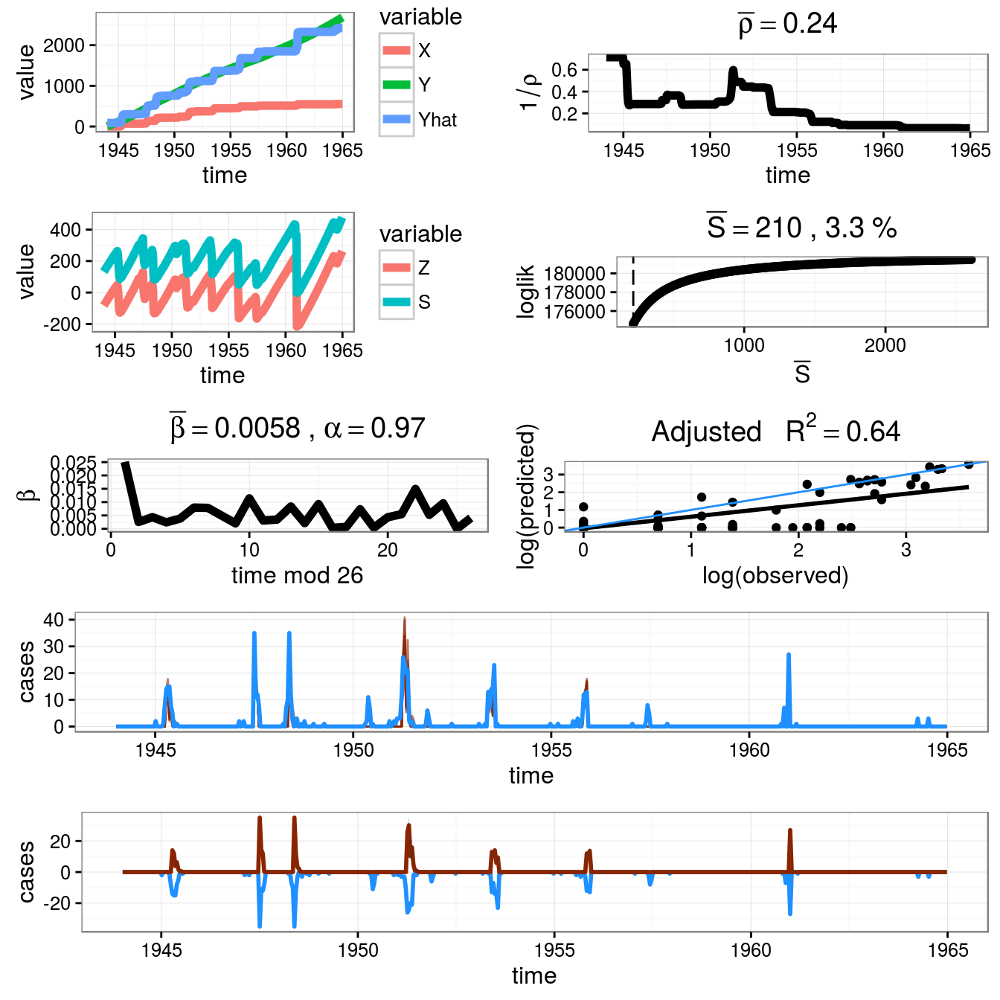

Chapter 3 Reproduction numbers during epidemics
Reprouction number, R, is the number of secondary cases generated by a single individual over its entire infectious period in a complete susceptile population , which is commonly used to characterize pathogen transmissibility during a epidemic. The monitoring of R over time provides the feedback on the effectiveness of interventions.
There are two R packages used to measure the reproduction number: R0 and EpiEstim. The former package can calculate the basic reproduction number(R0) and the time-varing reproduction number(Rt), however, the latter package supplies a new framework to estimate the time-vary reproduction number. There are two papers which give the detail introduction to the packages,respectively and you can download them in here and here.
3.1 Basic reproduction number
The concept of reproduction number is firstly introduced by the work of Alfred Lotka and Ronald Ross (PS: He received the Nobel Prize for Physiology or Medicine in 1902). However,the first modern application to the basic reproduction number in epidemiology was George MacDonald in 1952, who constructed population models on malaria. The R0 is a nonnegative value, if above 1 indicate that the disease will spread among a population, however, on the contrary, the infection will be die in the future. But some literatures also emphasized that even when the R0 below one it can be transimitted during a long-distance flights.
A review of generic methods used to estimate transmissibility parameters during outbreaks was carried out. Most methods used the epidemic curve and the generation time distribution (Note: The generation time reflect the time lag between infection in a primary case and a secondary case). Overall, the epidemic curve can be finished by the surveillance data by the epicurve function in epitoolspackage, however, the time distribution should be obtained from the time lag between all infectee/infector pairs and can’t be observed directly. Therefore, the serial interval distribution comes!
3.2 Package R0
As aformentioned, the value of generation time was substituted with the serial interval distribution. In R0 package, the generation.time function can creat a discretized generation time distribution, which based on the tiem interval to choose. Two types of distribution can be used: Emperical distribution and Parametric distribution. The former requires the full specification of the distribution, however, the latter includes thress methods (gamma, lognormal and weibull distribution) and need the mean and standard deviation information. Aterlatively, you can use the maximum likelihood method on the observed time intervals between the symptom onsets in primary cases and secondary cases. The est.GT function do solve the process.
The package R0 includes five methods to calculate the basic reproduction number(also called initial number) and the time varying reproduction number:Attack Rate (AR), Exponential Growth (EG), Maximum Likelihood (ML),Time-Dependant (TD), and Sequential Bayesian (SB). A detailed description to the method aboved can be found here. Here, we just point out the difference among the five methods:
Attack Rate (AR):
Background: Origined from the classical suspective-infective-recoery model. Attack rate is the percentage of population eventually infected.
Assumption: homogeneous mixing and closed population, No intervention.Exponential growth (EG):
Background: Phenomenon about the exponential growth rate rate during the early phase of an outbreak.
Assumption: The growth rate of the study period in epidemic curve is expential( deviance based R-squared statistic guide the choose).Maximum Likelihood (ML):
Background: Phenomenon about the exponential growth rate rate during the early phase of an outbreak.
Assumption: The secondary cases caused by an index case is Possion distribution with the excepted value of R. Moreover,the growth rate of study period in epidemic curve (from the first case on) is expential (Deviance based R-squared statistic guide the choose).Time-Dependant (TD):
Background: A time-dependant method to compute the reproduction number by averaging over all the transmission networks compatible with observations.
Assumption: It is possible to account for the importation cases during the epidemic. The confidence interval for Rt can be obtained by simulation.Sequential Bayesian (SB):
Background: Sequential bayesian estimation for the initial reproduction number. Origined from the approximation to tehe classical suspective-infective-recoery model with Possion distribution.
Assumption: Epidemic with a period of exponential growth and random mixing in the population.
The estimate.R function can realize the aformentioned methods by the “method” arguement. Overall, the exponential growth method (ML and TD) performance was the least affacted by the either aggregation or the over dispersion.
3.2.1 Example and code
Here, we used the dataset from the 1918 influenza pandemic and you can see its structure by the code “demo(Germany.1918)”. For simlicity, the example code only fixed on the Maximum Likelihood method. Overall, three steps to calculate the reproduction number: generate time distribution, estimate, and sensitively analysis. Analysis codes are as followed:
library(R0);options(device = "options");data(Germany.1918)
epid = c("2012-01-01", "2012-01-02", "2012-01-02","2012-01-03")
epid.count = c(1,2,4,8)
GT.flu<-generation.time("gamma", c(2.6,1))
res.R <- estimate.R(Germany.1918, GT=GT.flu,methods=c("ML"))
plotfit(res.R)
################ senzitively analysis ##################
sensitivity.analysis(Germany.1918, GT.type="gamma",GT.mean=seq(1,5,1),
GT.sd.range=1, begin=1, end=27,est.method="EG", sa.type="GT")## GT.Type GT.Mean GT.SD R
## [1,] "gamma" "1.58086588154581" "0.954292896527714" "1.28838902705086"
## [2,] "gamma" "2.04095089518824" "1.00627238027527" "1.36339301322812"
## [3,] "gamma" "2.99986217575755" "1.03970173174022" "1.53635327348974"
## [4,] "gamma" "3.99988819553508" "1.0405125530655" "1.74123683125572"
## [5,] "gamma" "4.99994770859945" "1.04068406516072" "1.97350896139042"
## CI.lower CI.upper
## [1,] "1.27247564304064" "1.3046931144676"
## [2,] "1.34280441223374" "1.38454612273489"
## [3,] "1.5041427715636" "1.56966342209184"
## [4,] "1.6940358887725" "1.79038129320771"
## [5,] "1.90795871942726" "2.04221224170092"3.3 Package EpiEstim
Most methdology to the reproduction number require the incidence data and the distribution of series interval. However, the estimate is right censored for the estimate of Rt requires the incidence data after time t. Moreover, some methods are sensitive to the selected time step or smoothing parameters. Anne Cori proposed a new framework and software[EpiEstim] to estimate the time-varying reproduction number. In the EpiEstim package, the time-varying reproduction number was divided into two types: Rt and Rtc. Here, we call Rt the instaneous reproduction number and call the Rtc the case reproduction number. The distinction between the Rtc and Rt is on the observation perspective: one is measured retrospectively, however,another is prospective based on the assumption that the infectious situation is constant in the future.
In practice, we assume that the infectious probability distribution ws of individual infected, depend on the individual biological factors such as symptom severity. Therefore, the infectious profile lie on the ws and the time since infection of the case, but indepent of the calendar time. Generaly, Rt can be estimate by the multiplication on the ratio of the number of new infectious cases at time t-1 and the ws. Rtc also called the cohort reproduction number becasue it counts the average number of secondary casued by a cohort infected at time t. Comparatively speaking, Rtc is more suitable for the situation that the contact rate and transmissibility can change over time, especially when the control measures are initiated. However, the correspending methods to the Rtc is inavailiable in EpiEstim package .
The EpiEstim package includes three types of methods to estimate the Rt: NonParametricSI， ParametricSI, and UncertainSI. The detained description to the method aboved can be foound here.All the method can be applied by the EstimateR function.
- For method “NonParametricSI”, the discrete distribution of the serial interval is directly specified in the argument “SI.Distr”;
- For method “ParametricSI”, the mean and standard deviation of the continuous distribution of the serial interval are given in the arguments “Mean.SI”" and “Std.SI”, which is derived automatically using “DiscrSI”;
- For method “UncertainSI”, mean and standard deviation of the serial interval vary according to truncated normal distributions.Firstly, we sample the mean from its truncated normal distribution(with mean Mean.SI,standard deviation Std.Mean.SI, minimum Min.Mean.SI and maximum Max.Mean.SI). Then,we sample the standard deviation from its truncated normal distribution (with mean Std.SI, standard deviation Std.Std.SI, minimum Min.Std.SI and maximum Max.Std.SI).
3.3.1 Example and code
Here, we use the dataset about the pendemic influenza in a school in Pennsylvania, 2009. You can see the structure of the dataset by the code “demo(Flu2009)”. Due the article length, we just give the result of the method “NonParametricSI”. The analysis code is as followed:
library(EpiEstim)
data("Flu2009")
## estimate the instantaneous reproduction number (method "NonParametricSI")
EstimateR(Flu2009$Incidence, T.Start=2:26, T.End=8:32, method="NonParametricSI", SI.Distr=Flu2009$SI.Distr, plot=TRUE, leg.pos=xy.coords(1,3)) ## $R
## T.Start T.End Mean(R) Std(R) Quantile.0.025(R) Quantile.0.05(R)
## 1 2 8 1.7356089 0.40908694 1.02863184 1.1218113
## 2 3 9 1.7490494 0.36470202 1.10874730 1.1953991
## 3 4 10 1.5370427 0.30740855 0.99469301 1.0686828
## 4 5 11 1.4316392 0.27055438 0.95131387 1.0175191
## 5 6 12 1.4223487 0.25143809 0.97288543 1.0355344
## 6 7 13 1.6349410 0.25227688 1.17832168 1.2432610
## 7 8 14 1.6636221 0.23295369 1.23867595 1.2998676
## 8 9 15 1.6156800 0.20686663 1.23586721 1.2911239
## 9 10 16 1.4340033 0.17651360 1.10905802 1.1565305
## 10 11 17 1.4083724 0.16155139 1.10963727 1.1535884
## 11 12 18 1.2477516 0.14219449 0.98470606 1.0234305
## 12 13 19 1.0819346 0.12577234 0.84955138 0.8836967
## 13 14 20 0.9369319 0.11446445 0.72610935 0.7569332
## 14 15 21 0.8194289 0.10759629 0.62222675 0.6508368
## 15 16 22 0.6908048 0.10185361 0.50575593 0.5322318
## 16 17 23 0.5894141 0.09962917 0.41054853 0.4356552
## 17 18 24 0.4989223 0.09978447 0.32287622 0.3468932
## 18 19 25 0.4726133 0.10842493 0.28454408 0.3094859
## 19 20 26 0.4173489 0.11575175 0.22222070 0.2468644
## 20 21 27 0.2976950 0.11251813 0.11968883 0.1397174
## 21 22 28 0.2400240 0.12001200 0.06539846 0.0819873
## 22 23 29 0.4577916 0.20473063 0.14864369 0.1803836
## 23 24 30 0.6754931 0.30208970 0.21933077 0.2661645
## 24 25 31 0.8634087 0.38612813 0.28034647 0.3402089
## 25 26 32 1.0040161 0.44900963 0.32600128 0.3956124
## Quantile.0.25(R) Median(R) Quantile.0.75(R) Quantile.0.95(R)
## 1 1.4450409 1.7035760 1.9913034 2.4587051
## 2 1.4912437 1.7237672 1.9793230 2.3889590
## 3 1.3200764 1.5165981 1.7317432 2.0751554
## 4 1.2410779 1.4146324 1.6036767 1.9037817
## 5 1.2456665 1.4075603 1.5829216 1.8596155
## 6 1.4584617 1.6219838 1.7973033 2.0708249
## 7 1.5011409 1.6527615 1.8142694 2.0644270
## 8 1.4717611 1.6068598 1.7499876 1.9703253
## 9 1.3113322 1.4267674 1.5487891 1.7361602
## 10 1.2963053 1.4022002 1.5137131 1.6842118
## 11 1.1491285 1.2423543 1.3404928 1.4904848
## 12 0.9946576 1.0770650 1.1639048 1.2967845
## 13 0.8573989 0.9322747 1.0113898 1.1328180
## 14 0.7445208 0.8147244 0.8892107 1.0040700
## 15 0.6196538 0.6858055 0.7565087 0.8664328
## 16 0.5195124 0.5838103 0.6532111 0.7622912
## 17 0.4284953 0.4922860 0.5621219 0.6735931
## 18 0.3956839 0.4643482 0.5405441 0.6639414
## 19 0.3345762 0.4066978 0.4885320 0.6241796
## 20 0.2161545 0.2836454 0.3639732 0.5036317
## 21 0.1521344 0.2203457 0.3065963 0.4652659
## 22 0.3084234 0.4276606 0.5744764 0.8380808
## 23 0.4550933 0.6310334 0.8476669 1.2366278
## 24 0.5816958 0.8065807 1.0834797 1.5806457
## 25 0.6764258 0.9379335 1.2599258 1.8380560
## Quantile.0.975(R)
## 1 2.6244959
## 2 2.5329479
## 3 2.1955178
## 4 2.0085685
## 5 1.9558194
## 6 2.1651730
## 7 2.1502729
## 8 2.0456070
## 9 1.8000616
## 10 1.7421780
## 11 1.5414648
## 12 1.3419870
## 13 1.1742159
## 14 1.0433607
## 15 0.9042566
## 16 0.8001144
## 17 0.7126626
## 18 0.7076205
## 19 0.6729457
## 20 0.5553914
## 21 0.5260890
## 22 0.9377027
## 23 1.3836245
## 24 1.7685354
## 25 2.0565439
##
## $SIDistr
## Mean Discrete SI Std Discrete SI
## 1 2.596 1.534531## estimate the instantaneous reproduction number (method "ParametricSI") EstimateR(Flu2009$Incidence, T.Start=2:26, T.End=8:32, method="ParametricSI", Mean.SI=2.6, Std.SI=1.5, plot=TRUE)
## estimate the instantaneous reproduction number (method "UncertainSI") EstimateR(Flu2009$Incidence, T.Start=2:26, T.End=8:32, method="UncertainSI", Mean.SI=2.6, Std.Mean.SI=1, Min.Mean.SI=1, Max.Mean.SI=4.2, Std.SI=1.5, Std.Std.SI=0.5, Min.Std.SI=0.5, Max.Std.SI=2.5, n1=100, n2=100, plot=TRUE)